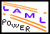

LENO Tutorial Demo
PDF print page
From this page there is access to PDF files of selected parts of the material, in different layouts.
Lecture
Normal size
Reduced size
The complete material
-
-
1. LENO Tutorial Demo
-
-

Generated: Tuesday November 26, 2002, 15:53:42